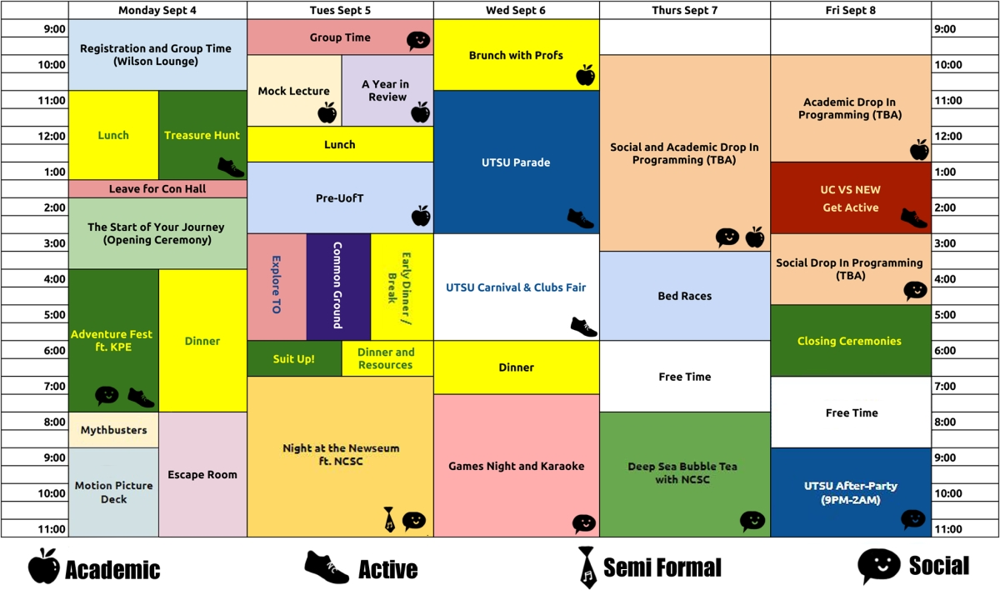

Schedule

Event Descriptions
Monday
-
Registration & Group Time
- Sign in for Orientation, receive your Orientation kits and meet your Leaders and Group for the week! Treasure Hunt
- Follow the clues to find the hidden treasures around campus. Opening Ceremony
- Introduction to Orientation! Adventure Fest
- Street festival in collaboration with the Faculty of Kinesiology. Roam around New College and Kin, enjoying cotton candy, inflatables, a dunk tank, music and more! Movie Night
- Cozy up with blankets and snacks as we show Atlantis: The Lost Empire Escape Room
- Familarize yourself with university exam rules as you race against time to solve the puzzles and escape the exam room!
Tuesday
-
Mock Lecture
- Learn about lecture structure and the best tips on succeeding in uni straight from the pros! A Year in Review
- Ever wondered what your first year is really going to look like? Look no further! This session introduces what you can expect from UofT and your first year here :D Pre-UofT
- Meet professors and fellow students in your faculty, get a feel for program and learn about exciting opportunities your department offers! Explore TO
- Sit back and relax as you tour your new home on a double decker bus seeing all the major attractions that Toronto has to offer. Common Ground
- Being in a large new city can be a daunting prospect, learn about sex positivity and bystander intervention and familiarize yourself with various resources for all the questions you may have. Dinner + resources
- Munch on your dinner while chatting with professors and representatives from academic and social resources across campus. Got a question about uni/life in general? Now's the time to ask. Night at the Museum
- Dinosaurs, dessert & dancing. Dance in the Royal Ontario Museum with your friends in this semi-formal gala! (Dry event)
Wednesday
-
Brunch With Profs
- Enjoy your morning coffee and chat with professors in your department, ease up all that tension! They're here to give you study tips and let you know about various opportunities around campus. UTSU Parade
- Show your New College pride! Learn the cheers, slap on some paint and march around Toronto showing everyone . . . We the New! UTSU Carnival & Clubs Fair
- Find opportunities to get involved with UofT! Get involved with a club and relax with your friends. Games Night & Karaoke
- You can choose whether to show off your stellar karaoke skills or to chill and play cards/a board game or Get Crafty :D
Thursday
-
Social and Academic Drop in Programming
- Have some free time before/after class? Feel free to drop into any of our sporting/academic sessions :D Bed Races
- Cheer as we compete with other colleges & faculties to get the fastest 'bed racing' time. Races take place on the street by Con Hall. NCSC Event
- Stay tuned for updates
Friday
-
Academic Drop in Programming
- Stay tuned for updates UC vs NEW
- Compete with University College in a variety of games including: parachute, quidditch, soccer, four square, dodgeball and yoga. Social Drop in Programming
- Stay tuned for updates Closing Ceremonies
- One door closes and another opens, as your Orientation week ends, your university career begins.
Follow us on Facebook and Instagram to stay updated :D